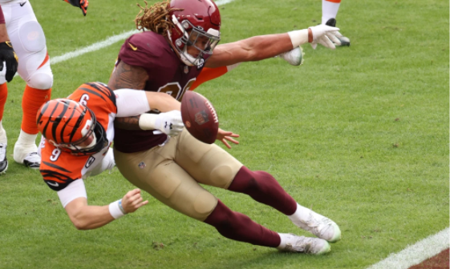

Getting Edgy Before Day 2
If you’re coming here from my previous article If You're Drafting a Defensive Tackle in the First Round, What are you Doing? you’re one step closer to fixing your defensive line correctly. Whereas their interior…